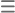

<mat-toolbar class="secondnavbar" fxLayout="row" fxLayout.lt-md="column">
  <span class="navbar-brand"><b style="font-size: medium;">Projects({{projectListLength}})</b></span>

  <div fxLayout="row" fxLayoutAlign="end center" fxLayoutGap="10px" class="secondnavbar-button row">
    
    <button mat-button [matMenuTriggerFor]="viewOptions" class="custom-grid-button" (click)="switchToGridView()">
      <mat-icon>grid_view</mat-icon>
      <span>Grid View</span>
      <mat-icon>keyboard_arrow_down</mat-icon>
    </button>

    <mat-menu #viewOptions="matMenu">
      <button mat-menu-item (click)="switchToListView()">
        <mat-icon>list</mat-icon>
        <span>List View</span>
      </button>
    </mat-menu>

    <button class="primary-button" style="font-size: 15px;">
      <mat-icon style="color: white;">control_point</mat-icon>
      <b>New Project</b>
    </button>
    
    <!-- add new project design for small screen -->

    <a href="#" class="primary-button-small ">
      <mat-icon>control_point</mat-icon>
   </a>

   <!-- add view format design for small screen -->
   <div class="view-format-button-small-screen">
   <a  mat-button [matMenuTriggerFor]="viewOptionss" class="custom-grid-button-smallscreen " (click)="switchToGridView()" >
    <mat-icon>grid_view</mat-icon>
    
    <mat-icon>keyboard_arrow_down</mat-icon>
   </a>
  <mat-menu #viewOptionss="matMenu">

    <a  mat-menu-item (click)="switchToListView()"class="custom-list-button-smallscreen">
      <mat-icon>list</mat-icon>
      
    </a>
  </mat-menu>
</div>

   

    <!-- <mat-card-header class="toggleProjectHeaderButtons">
      <div class="gap-3 d-flex d-lg-none">
          <span class="bg-primary"></span>
          <span class="bg-primary"></span>
      </div>
  </mat-card-header> -->
  </div>
  
</mat-toolbar>